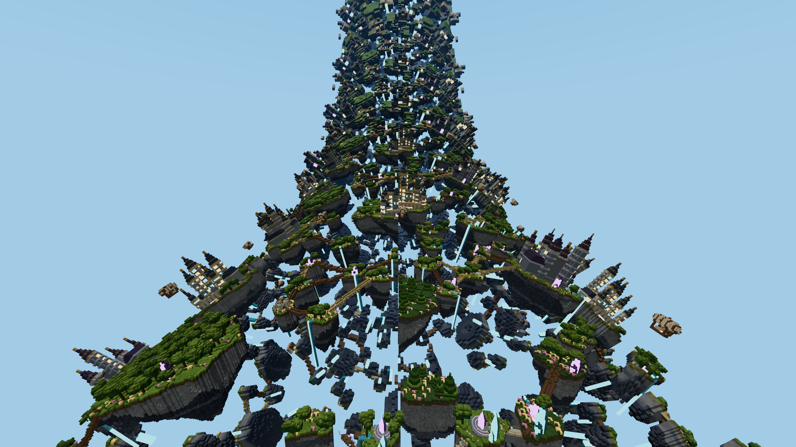
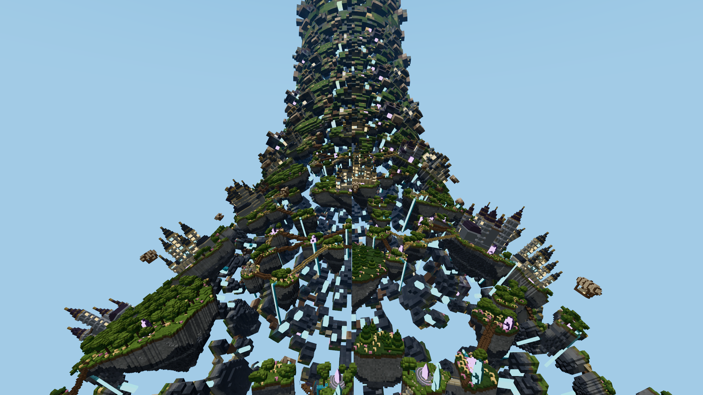

Shape-preserving texture proxy


Left: baseline. Right: candidate. Drag the slider or open the baseline image / candidate image.
2026-11-05 · Aether only · Firefox 159 · WebGPU · 2560 × 1440
Baking remains Off by default. Its opt-in preset uses 32 m surfaces, the original geometry LOD, one texel per source cell, a 384 m start distance, a 32 MiB texture pool, Sharp filtering and Balanced batching. Graphics settings offer Memory Saver / Balanced / Maximum batching and 0–2 additional geometry LOD levels.
Baselines bracket reversed candidate order. Each view warms up for 1.5 seconds and samples for 6 seconds. FPS is total frames divided by total elapsed frame time. GPU spans use timestamp-query. Horizon, turning and downward views cover different visible terrain.
| Configuration | View | FPS | GPU ms | Far draws | Frame draws | Frame triangles / M |
|---|---|---|---|---|---|---|
| Baking Off | Horizon | 98.6 | 3.90 | 36 | 203 | 1.908 |
| Baking Off | Turning | 96.7 | 3.82 | 36 | 165 | 1.885 |
| Baking Off | Downward | 95.2 | 4.22 | 31 | 267 | 1.959 |
| Balanced: preserve shape + texture | Horizon | 98.6 | 3.85 | 30 | 196 | 1.637 |
| Balanced: preserve shape + texture | Turning | 103.1 | 3.51 | 30 | 158 | 1.621 |
| Balanced: preserve shape + texture | Downward | 92.4 | 4.30 | 34 | 271 | 1.775 |
| Maximum: unified texture shader | Horizon | 97.6 | 3.97 | 16 | 183 | 1.637 |
| Maximum: unified texture shader | Turning | 101.4 | 3.68 | 16 | 144 | 1.620 |
| Maximum: unified texture shader | Downward | 90.3 | 4.46 | 16 | 252 | 1.775 |
The identical-code control executes Baking Off under every configuration label. Its maximum pooled label difference was 1.80%. This is observed order/session variation, not a confidence interval or a correction to subtract.
| Configuration | View | FPS | GPU ms | Far draws | Frame draws | Frame triangles / M |
|---|---|---|---|---|---|---|
| Baking Off | Horizon | 95.7 | 4.06 | 46 | 213 | 1.908 |
| Baking Off | Turning | 97.3 | 3.85 | 46 | 175 | 1.885 |
| Baking Off | Downward | 90.1 | 4.34 | 33 | 269 | 1.959 |
| Balanced: preserve shape + texture | Horizon | 94.7 | 3.94 | 46 | 213 | 1.908 |
| Balanced: preserve shape + texture | Turning | 96.9 | 3.89 | 46 | 174 | 1.885 |
| Balanced: preserve shape + texture | Downward | 90.3 | 4.32 | 33 | 269 | 1.959 |
| Maximum: unified texture shader | Horizon | 98.1 | 3.87 | 46 | 213 | 1.908 |
| Maximum: unified texture shader | Turning | 97.6 | 3.89 | 46 | 174 | 1.885 |
| Maximum: unified texture shader | Downward | 92.5 | 4.34 | 33 | 269 | 1.959 |
Maximum batching reduces draw calls substantially, but ordinary faces also pass through the texture-capable shader. It does not establish a consistent whole-frame advantage and loses FPS in the downward view. Balanced allocates about 54 MiB of arena buffers plus 32 MiB of textures; Maximum uses about 36 + 32 MiB. The baseline arena uses 40.5 MiB. Fewer resident faces do not imply lower total GPU memory or proportional frame-time savings.
Small immutable atlas regions share array layers. Updates upload only changed rectangles. The shader calculates atlas coordinates only for textured faces, combines coordinates and layer into one varying, and decodes descriptors directly from packed bytes. Repacking settled geometry pages did not reduce page or draw counts, so a runtime compactor was not added.
Page allocation depends on publication order. Final-run Off draws ranged from 21 to 48 across the bracketing baselines; Balanced ranged from 29 to 35; Maximum remained at 16. This allocation/order effect is an additional confound beyond identical-code timing spread. Do not compare only against the most favorable baseline.
The shape-preserving mode retains flat-space occupancy, holes and emission partitions. Large surfaces still interpolate differently under ring projection, so it is not pixel-exact. Pixels with maximum RGB channel change above 2/255 occupy approximately 0.88% of the horizon image and 0.66% of the downward image. One extra geometry LOD reduces resident faces by about 30.8%, but changes approximately 11% of pixels and visibly alters island silhouettes and openings. Extra coarsening defaults to 0; level 2 is exposed experimentally and was not selected by the browser study.

Left: baseline. Right: candidate. Drag the slider or open the baseline image / candidate image.

Left: baseline. Right: candidate. Drag the slider or open the baseline image / candidate image.
| Configuration | View | FPS | GPU ms | Far draws | Frame draws | Frame triangles / M |
|---|---|---|---|---|---|---|
| Baking Off | Horizon | 109.7 | 3.49 | 28 | 195 | 1.908 |
| Baking Off | Turning | 110.7 | 3.48 | 28 | 156 | 1.884 |
| Baking Off | Downward | 105.1 | 3.75 | 26 | 261 | 1.959 |
| Large pages only | Horizon | 109.1 | 3.76 | 16 | 183 | 1.908 |
| Large pages only | Turning | 112.1 | 3.33 | 16 | 144 | 1.884 |
| Large pages only | Downward | 104.9 | 3.84 | 16 | 252 | 1.959 |
| Balanced: preserve shape + texture | Horizon | 111.1 | 3.66 | 28 | 196 | 1.637 |
| Balanced: preserve shape + texture | Turning | 114.3 | 3.06 | 28 | 158 | 1.620 |
| Balanced: preserve shape + texture | Downward | 105.1 | 3.69 | 34 | 270 | 1.775 |
| One extra geometry LOD + texture | Horizon | 114.5 | 3.36 | 29 | 196 | 1.525 |
| One extra geometry LOD + texture | Turning | 113.6 | 2.93 | 29 | 159 | 1.511 |
| One extra geometry LOD + texture | Downward | 106.9 | 3.42 | 36 | 272 | 1.698 |
121 relevant tests passed, as did engine/client type checks and the production build. Accepted timed blocks contain no WebGPU errors or pending terrain work. The final run restores pixel-exact baseline images. Identical-code control images differ by at most 1/255 in one channel; no pixel exceeds 2/255. Any backgrounded timed block is discarded and retried after a 30-second foreground warmup.
One machine, medium lighting, shadows off. Loading, baking, uploads, transitions and screenshots are excluded from steady-state FPS. Results do not establish benefits on mobile, other GPUs or other terrain. Color atlases use level-zero sampling with replicated chart borders and no mip chain. Color textures cannot restore missing silhouettes or occluded geometry.
All 18 final measurement blocks and images were saved. Writing the extra completion marker returned HTTP 400 because the local receiver did not allow that filename. The original failure.txt is retained for audit. The receiver was fixed, and the subsequent control run verified successful completion-marker saving.